Home | Projects | Notes > Computer Architecture & Organization > Computer Logic
Two stable states with enough separation are required in order to distinguish the logic 1 from the logic 0.
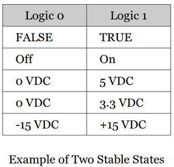
An input/output signal with ' or bar means it is an active low signal.
e.g., Enable (active high; active when input is 1) vs. Enable' (active low; active when input is 0)
Gates and flip-flops are two basic circuit elements that construct computers.
Gates (combinational logic element)
A circuit whose output depends only on its current inputs.
At the lowest level of a computer are the primitive AND, OR, and NOT gates.
Flip-flops (sequential logic element)
A circuit whose output depends on its past history as well as its current input.
Can remember its previous inputs; So also a memory element.
Can be built from simple combinational logic elements.
Levels of Hardware
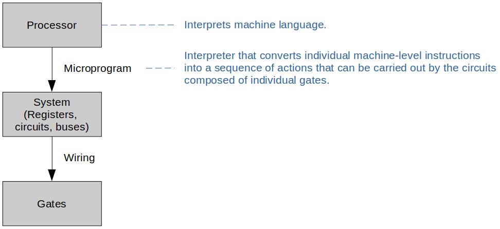
Digital computers are binary systems that use the two symbols 0 and 1 (also called as false and true, or low and high, or off and on respectively).
AND, OR, NOT (Inverter) Gates are the three basic building blocks of all modern digital computers). Any digital logic circuits can be built just with these three types of gates.
AND Gate Symbol and Truth Table
More than two inputs available.
An AND Gate is disabled with a constant 0. (No matter what the other inputs are, the output is always going to be a constant 0.) This helps simplify the circuit analysis process.
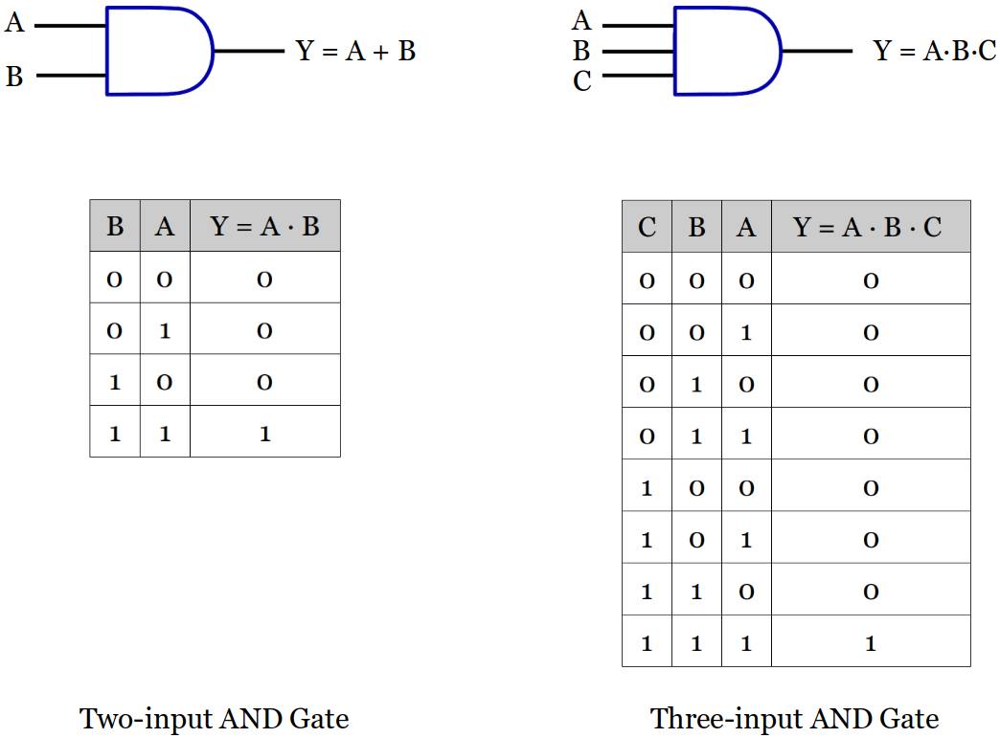
OR Gate Symbol and Truth Table
More than two inputs available.
An OR Gate is disabled with a constant 1. (No matter what the other inputs are, the output is always going to be a constant 1.)
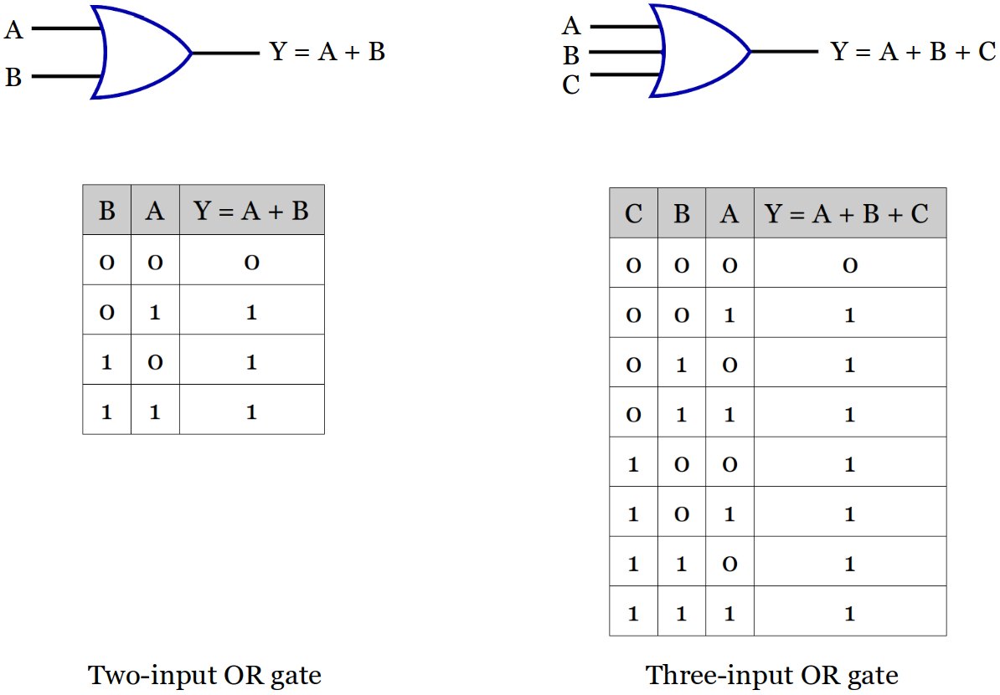
Inverter Symbol and Truth Table
Only one input available.
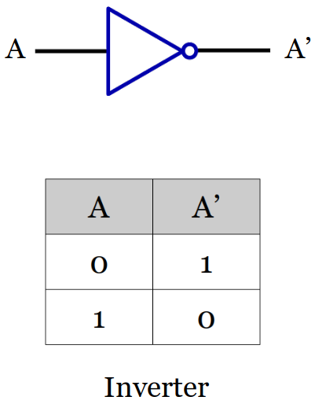
Symbol and Truth Table for Some Derived Gates
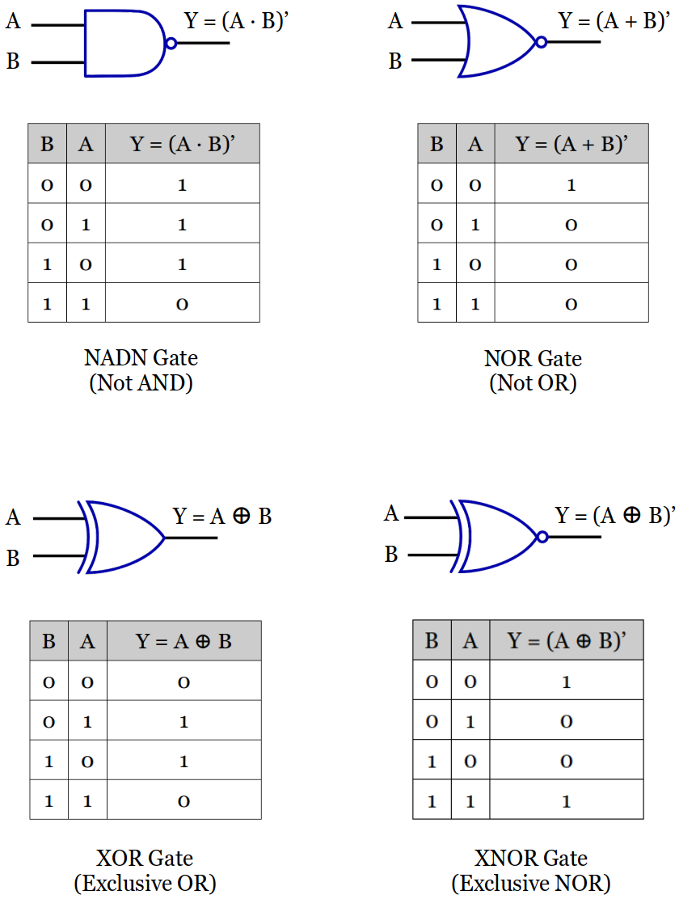
Like an AND Gate, a NADN Gate is also disabled with a constant 0, but the output is the opposite; a constant 1.
More than two inputs available.
Like an OR Gate, a NOR Gate is also disabled with a constant 1, but the output is the opposite; a constant 0.
More than two inputs available.
An XOR Gate cannot be disabled by a certain input; the other input must be evaluated together to determine the output.
Exactly two inputs available.
When an input is a constant 0, the output will be whatever the other input is going to be.
When an input is a constant 1, the output will be the invert of whatever the other input is going to be.
[!] Note: The output of XOR Gate is the complement of that of XNOR Gate's.
An XNOR Gate cannot be disabled by a certain input; the other input must be evaluated together to determine the output.
Exactly two inputs available.
When an input is a constant 0, the output will be the invert of whatever the other input is going to be.
When an input is a constant 1, the output will be whatever the other input is going to be.
[!] Note: The output of XNOR Gate is the complement of that of NOR Gate's.
F(A,B,C,D) = C'D' + A'BC + ABCD + A'B'
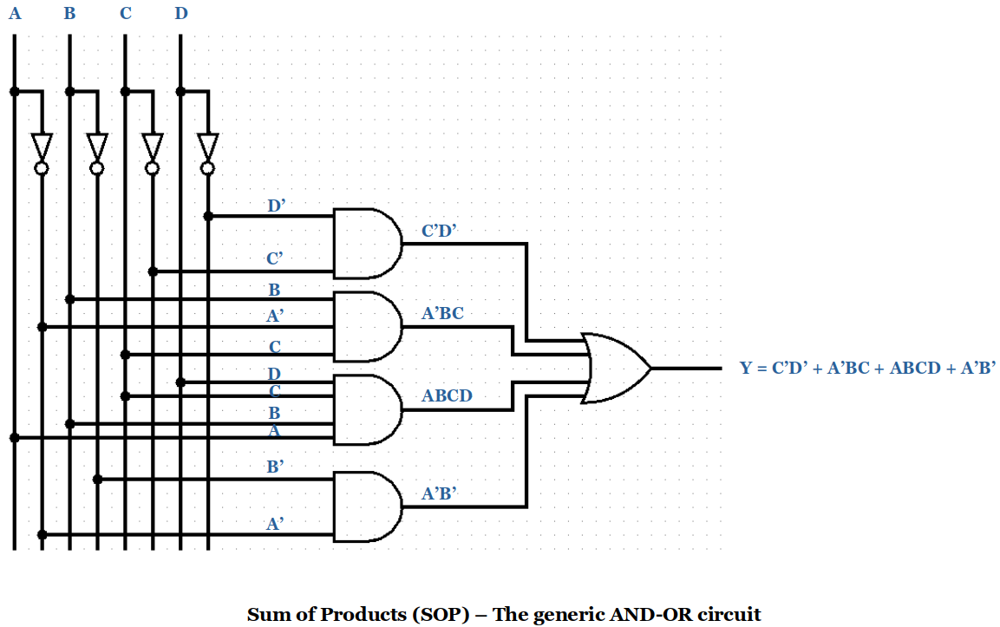
F(A,B,C,D) = (C'+D')(A'+B+C)(A+B+C+D)(A'+B')
Several interconnected gates make up a circuit.
Remember! An output of a gate can be connected to one or more inputs of other gates, but you MUST NOT connect the outputs of the gates to each other. (e.g., If one goes to +5 VDC and another goes to 0 VDC or ground, this makes a short circuit!)
Circuit analysis steps:
Label the gates (e.g., U1, U2, U3, ..., Un)
Starting with the gates closest to the inputs express each gate's output. (Use a truth table if small number of inputs. If too many inputs, a Boolean function may be necessary.)
Continue moving from the inputs to all the other gates until all outputs are expressed.
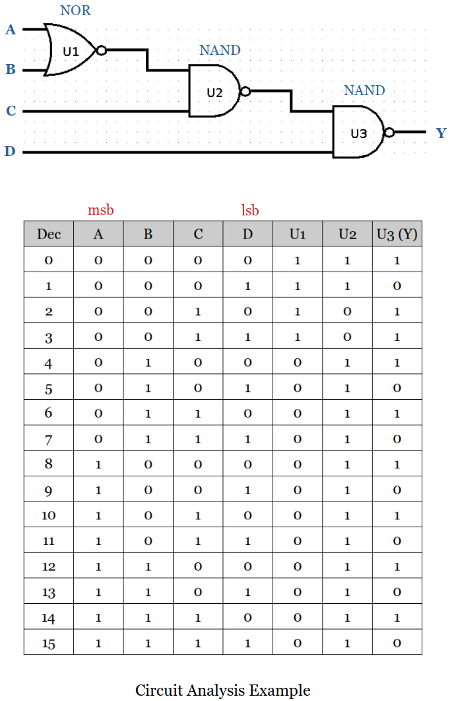
A universal gate is a gate which can implement any Boolean function without need to use any other gate type. There are two universal gates; the NAND and NOR gates.
NAND gates alone (or alternatively NOR gates alone) can be used to reproduce the functions of all the other logic gates.
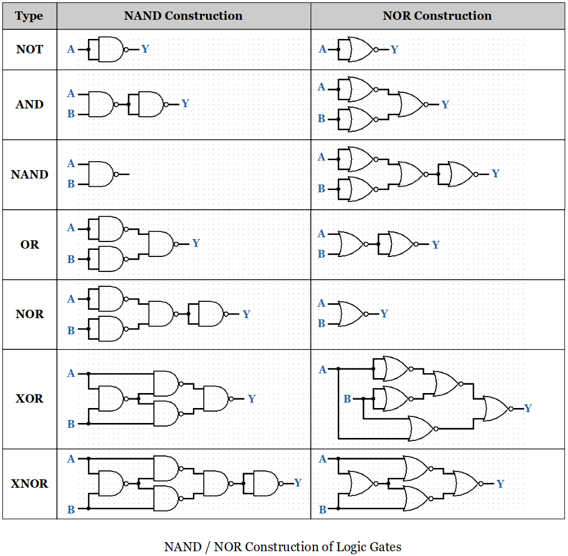
Half adder adds two single binary digits A and B, outputs the sum and carry.
Since it does not have a dedicated input line for carry, it cannot be used to add two binary numbers that are of multiple bits.
Full adder adds binary numbers and accounts for values carried in as well as out.
A one-bit full adder adds three one-bit numbers, often written as A, B, and Cin; A and B are operands, and Cin is a bit carried in from the previous less-significant stage.
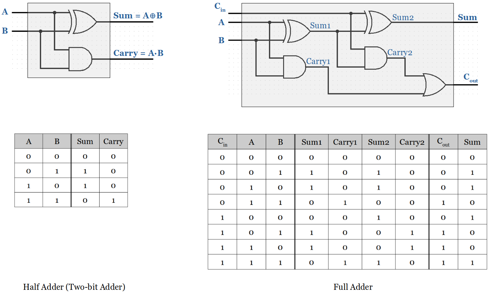
n-bit Binary Adder is also called a Ripple Carry Adder (RCA) or a Parallel Binary Adder (PBA).
Inputs: Two n-bit words
Output: One n-bit word (i.e., the sum of the inputs) and provide a carry output
[!] From this point on, for the efficiency purpose, will use the standard block diagram instead of drawing the circuit to the gate level.
Following example uses four full adders and the LSB (Least Significant Bit) carry input is set to 0 or ground.
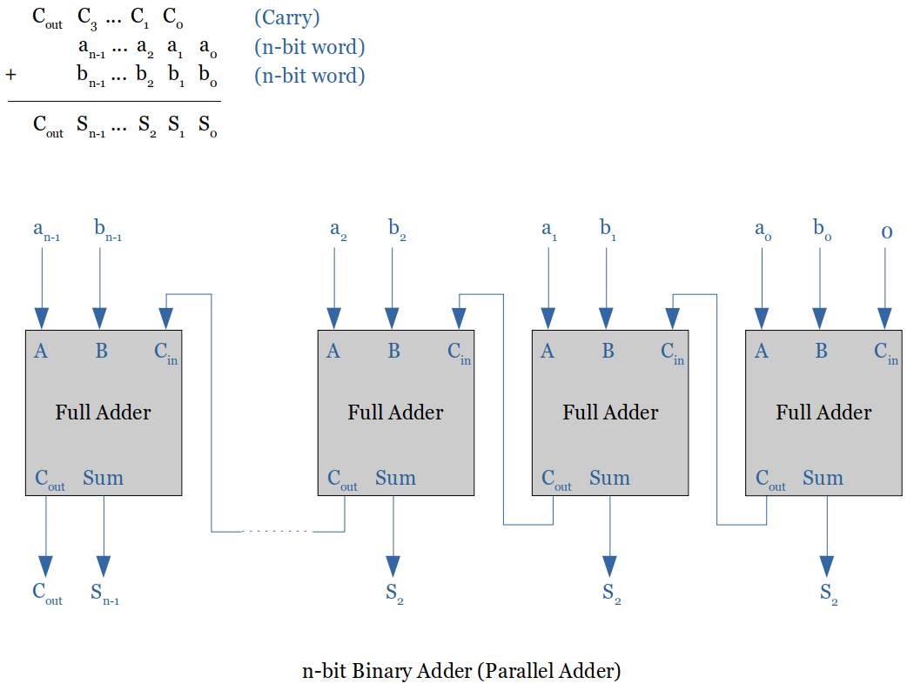
The major problem with the Ripple Carry Adder (RCA) or PBA is the final sum is not obtained until the carry has rippled through the full adders. Therefore, it gets very slow as the operand bit size gets bigger.
A typical gate delay is around 10 nanoseconds. This gate delay varies based on the technology used in the implementation (ECL, MOS, MOS-FET, CMOS, TTL)
The Carry-Lookahead Adder changes the design so that there is no propagation delay; it is a constant per bit. (Modern computer systems use this type of adders.)
For small number of bits the RCA is still faster an always cheaper (based on the cost per gate).
Programmable Inverter
XOR gates wired together.
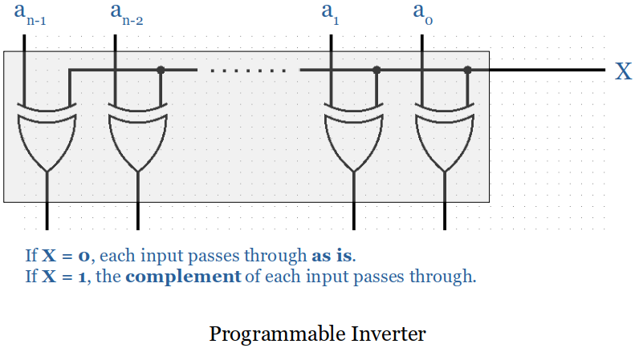
Adder/Subtractor
A programmable inverter and a n-bit binary adder put together creates a n-bit binary adder/subtractor.
When the control input is set to 1, the programmable inverter negates the bits of A and adds 1 to the carry-in of the first stage. (This process of inverting all bits and adding 1 forms the two's complement of a number.)
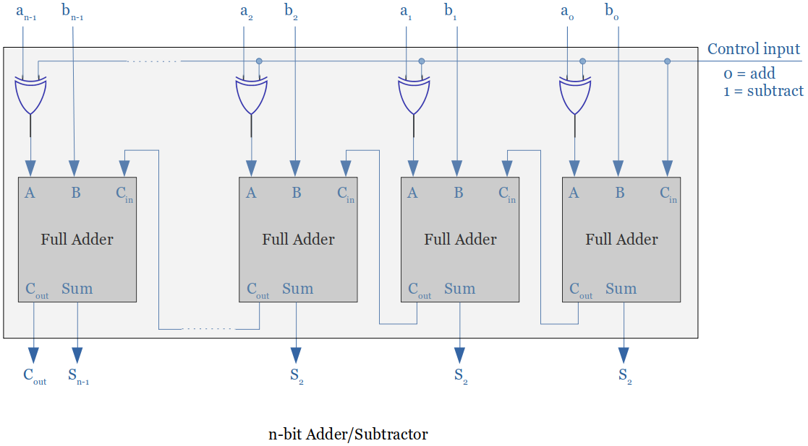
Decoder is a combinational circuit that has
It converts a n-bit op-code into at most
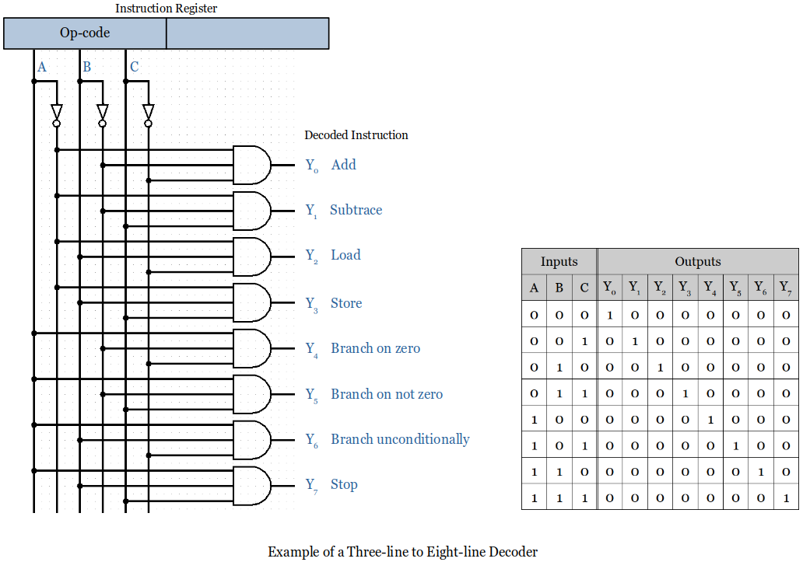
Multiplexer is a combinational circuit that has maximum of
It is an electronic switch that selects input A or input B, depending on the state of the selection line S (a.k.a. control input).
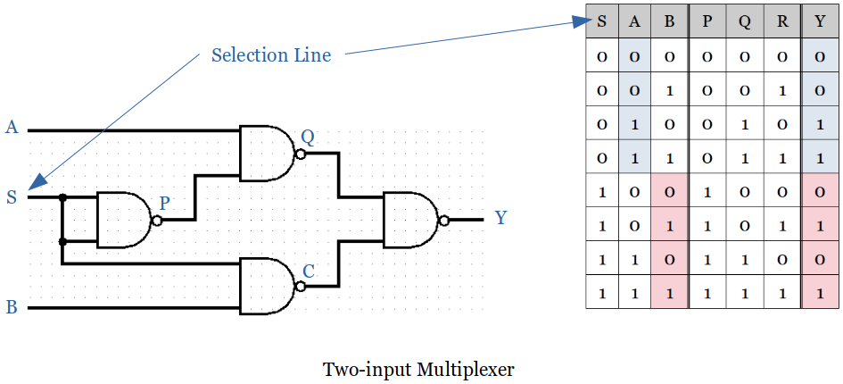